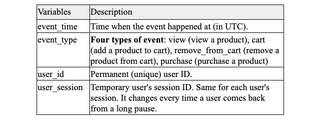
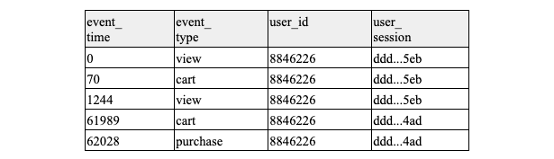
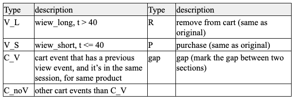
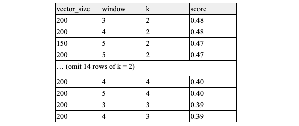

User Clustering
Clustering Online Store Users with Clickstream Data
Team: Personal project
Expertise: data analysis, UX research
Period: 2021
Project Overview
This project aims to explore how we can use the data mining methods to extract insights from user behavior patterns, i.e. what actions they have, which can be used as a persona for UX design strategy or as a guideline for further UX research. In our study, we analyzed the event history dataset of an online shopping platform.
Research Goal and Dataset
The dataset used in this report is an eCommerce Events History in Cosmetics Shop. Since the size of this dataset is extremely large, for the analysis process efficiency, in this paper we only use one month's data, which contains 4,102,283 events, 873,960 unique sessions, from 399,664 unique users. Given that the dataset is from an eCommerce platform, our goal is to learn the browsing patterns in each group, which can help UX designer and researcher to identify high level UX issues, and also serve as a guideline for them to conduct further research.
Process
1.
Find a model to represent user behavior patterns
We considered three possible ways to model our user behavior patterns: Motif, Similarity matrix, and Doc2Vec. All of them provide a way to represent sequential data. We finally decided to use Doc2Vec to model our data. See here for more detail about the reasoning of choosing the method.
2.
Cluster behavior patterns
After finding a way to represent the data, we will need to cluster users into different groups for further. The common clustering method used in clickstream analysis is k-mean clustering, which is what we use in the paper. For evaluating the clusters’ consistency, we tried two different methods – the Elbow Method, and the Silhouette Method. For the Elbow method, we figured out that the curve did not have a very clear elbow shape, so we ended up using the Silhouette Method. We will discuss more detail in section 3.
3.
Extract pattern from each group
Within each user group, we extracted the shared patterns. With those patterns, we can compare the differences between each group, make inferences about the potential reasons behind it, and what recommendations for UX can be made.
Data Preprocessing
In our dataset, there are 9 columns, including event_time, event_type, product_id, category_id, category_code, brand, price, user_id, user_session. The definitions of important variables are:
Table 1
Each row of data means an action (event) that a user takes. One user can have multiple sessions, and multiple actions (events) in one session. The original dataset is completely sorted by event_time, and all users’ data are mixed together. We grouped and sorted the data by user_id and event_time, so all the users’ events and sessions are reordered into a chronological order, which is easier for further data processing. We also removed the category_code, and brand columns because there are lots of missing values in them.
For the event_time data, we formalized the entire time span (across sessions) of a user. The start time of the first row (first event) is 0 second, and the time of the following rows will accumulate. This way we can easily know the time difference between two actions. However, we did not reset the start time for different sessions of the same users. The reason is that we can also consider the time period between sections, which might be insightful information for personas. Here are some examples of the processed data from a user:
Table 2
For the event_type label, although there are four distinct and straightforward event types, we realized that even the same even_type might not represent the same behavior in a sequential fashion. See here to learn more about how we separate the event_type.
Finally we decided to regroup the event_type label as below:
Table 3
Experiments
Based on some relevant previous studies, we decided to tune our model with the following hyperparameters: vector_size and window, where vector_size is the dimensionality of the feature vectors, and window is the maximum distance between the current and predicted word within a sentence. Also based on previous studies, the values we chose for each parameter are:
• vector_size: 10, 50, 100, 150, 200
• window: 1, 2, 3, 4, 5
Next, we used the trained embeddings to run the k-means clustering. At this stage, we also want to experiment with different k to see which one can produce the best result. Based on our previous experience working with k-means clustering, we experimented with k: 2, 3, 4, 5, which should be enough for us to find the best k.
We validated a model’s consistency by calculating its Silhouette score. The Silhouette score is a method for measuring how well an object matches its cluster. The possible range of a Silhouette score is from -1 to 1, where a higher score means an object is well matched to its cluster. The following shows the result of the experiment:
Table 4
In terms of Silhouette score, we should choose k = 2, with vector_size = 200 and window = 3 or 2. However, in previous relevant studies, it is more common to choose a k larger than 2. In addition, from the perspective of building personas for such a large user base, it makes sense that if we have a few more clusters to represent different user groups. After 18 rows of hyperparameter combination with k = 2, we can see that k = 4, with vector_size = 200, and window = 4 or 5, has the best Silhouette score after k = 2. With that, we first tried to use k = 4 to see what patterns we have. However, we realized that in that case, the frequent patterns shared in two specific groups are almost the same. Therefore, we finally decided to choose k = 3, with vector_size = 200 and window = 3. Figure 1 is the graph of the clustering.
Interpretation
After clustering the data into 3 groups (groups are labeled as G1, G2, and G3), we then extracted the pattern from each and analyzed their patterns. We first computed the average sequence length of each group (Table 5). We can see that G1 and G3 have similar sequence length, which is longer than G2.
Table 5
To extract patterns, we used the Prefixspan library, which can find all the subsequences from a given set of sequences, and also count the frequency. We extracted the top 20 most frequent sequence patterns that have a length larger than 5. We chose top 20 because if there are significant differences between each group’s pattern, the most important ones should happen frequently, thus top 20 should be enough for us to see the differences. And for the sequence length, we chose 5 because if the number is too small, the result will not have any difference between each group. If we make it too large, the pattern might not be a proper representative for a group. The following are the patterns we found from the result.
Group 1 and Group 3:
First, their average sequence lengths are similar, which means that they have similar activity counts.
Users of G1 and G3 have many sessions (have lots of V_G and gap), but they do not necessarily have a purchase in a session.
The difference between G1 and G3 is that G1 has a higher frequency of a sequence of C_noV (add a product to cart without viewing it).
Group 2:
G2’s patterns are much more diverse. G2’s users have more actions of R (remove product from cart) and C_noV.
We can interpret the results as following:
1.
G1 and G3 are frequent visitors but they do not take too many further actions (add, remove, etc.). The main character of them is that G1 and G3 users come back to the website pretty often, but they mostly do browsing, and usually drop off after a view action.
2.
We can actually treat G1 and G3 as the same group, and G3 is more like a subgroup of G1 (G3 takes even fewer further actions than G1).
3.
G2 has a higher rate in taking further actions. Also, it seems like a remove from cart action frequently happened after adding a product to cart.
From the result and interpretation, we can conclude that we were able to group users into different sections and extract some meaningful patterns from them. In terms of UX, we can make a further hypothesis from each interpretation. For example, G1 and G3 come to the website a lot but do not have further actions could mean that the product itself is attractive and the marketing is doing good, but there is something going wrong after the users enter the website. Or it can also be a natural behavior of this type of user. A UX researcher can conduct future research on that. And for G2, the pattern of having products added to cart and removing them from cart after could have several meanings. Maybe they are hesitating whether they should buy the product, or maybe they are comparing the products.
Discussion
Although we got some patterns from the analysis, we have to say there are some limitations of this study. The major issue is that the pattern might not be representative enough. For example, the amount of C_noV, gap, and V_G is way more than purchase, which excluded the P event from the top frequent patterns and made it hard to interpret. Issues like this are challenging to tackle because of two reasons.
First, we did not collect the data ourselves and we do not know about the structure of the website, so we have to make some assumption while using the data. As we stated in Section 2, the event type sequence does not always be expected (view -> cart -> purchase), this might be the nature of the website (e.g. they have options for add product to cart without view the product, or they have external link to add product to cart), or it also could be the result of missing values. We do not know the reason behind it, and thus we could not do further processing to make more sense of the data.
In addition, the way the data collected is not exactly the way we wish to. For example, also as what we stated in Section 2, some (same) events in a consecutive sequence happen at the same time. This might be a noise for the sequential data analysis, because in terms of time they might actually have “one action”. Indeed, we should probably spend much more time on preprocessing the data, but as we mentioned in the previous paragraph, inadequate knowledge of the dataset and the website makes it very difficult to do more preprocessing.